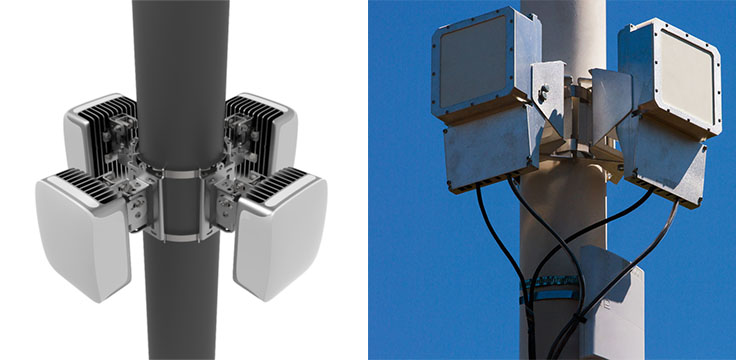

Piloting a new "backhaul" technology
Terragraph is a 60 GHz, multi-node wireless system that works especially well in dense urban areas. The technology is based on something called WiGig, an enhancement to WiFi designed for short-range use. Because of this, Terragraph nodes need to be placed every 200-250 meters across the service area. Currently there are 200+ Terragraph nodes deployed in downtown San José.
There are a few advantages of the Terragraph technology:
- Uses commercial off-the-shelf components to simplify rollout
- Steers the highly directional signal around interference that’s typical of dense urban areas
- Utilizes Facebook’s technology that was developed to manage Facebook’s massive data centers to improve network performance
As the pilot rolls out, Facebook has installed over 200 Terragraph nodes on infrastructure near Diridon and parts of downtown. The city is making sure that the nodes are attached safely and don’t disrupt traffic and light pole function.
The partnership with Facebook is an example of a San José that’s open for business – we want to be testing ground for new, cutting-edge technology that can improve the lives of our residents.
This innovative “demonstration project” allows the city to innovate and learn how to efficiently deploy small cells on our infrastructure and ultimately lower the cost of deployment. For Facebook, it offered the opportunity to help spur innovation around fixed wireless technology and speed deployment of broadband networks around the world.
Check out this jointly authored paper with Facebook to advance lowering the cost of deploying broadband through these kind of solutions: Urban Network Densification. You can also see what Facebook had to say about this project.